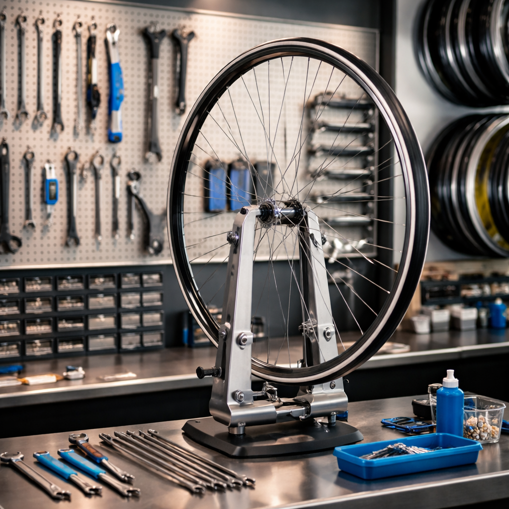

From precision tune-ups to custom builds, Ben's Bicycle Shop keeps you rolling with professional expertise and passion for every ride.
Get a Quote TodayExpert mechanical support for road, mountain, and city bikes.
A comprehensive safety check, gear adjustment, and brake alignment to keep your bike running smoothly and safely.
Deep cleaning and lubrication of your cassette, chain, and derailleurs to ensure crisp shifting and longevity.
Precision wheel straightening and spoke tensioning to eliminate wobbles and improve your ride quality.
Located in the heart of Sydney, Ben's Bicycle Shop was founded on a simple principle: every cyclist deserves a perfectly tuned machine. Whether you're a daily commuter, a weekend trail warrior, or a competitive racer, Ben provides the individual attention your bike needs.
With years of mechanical experience and a deep-rooted passion for cycling culture, we don't just fix bikes—we help you enjoy the ride.
Talk to Ben
"Ben is the only person I trust with my carbon road bike. His attention to detail is second to none. Highly recommended!"
- Chris J., Sydney"Fast turnaround and very fair prices. My old hybrid feels like it's brand new again. Thanks Ben!"
- Sarah M., Surry Hills"Exceptional service. Ben explained exactly what was wrong and fixed it on the spot. A true professional."
- David L., Newtown